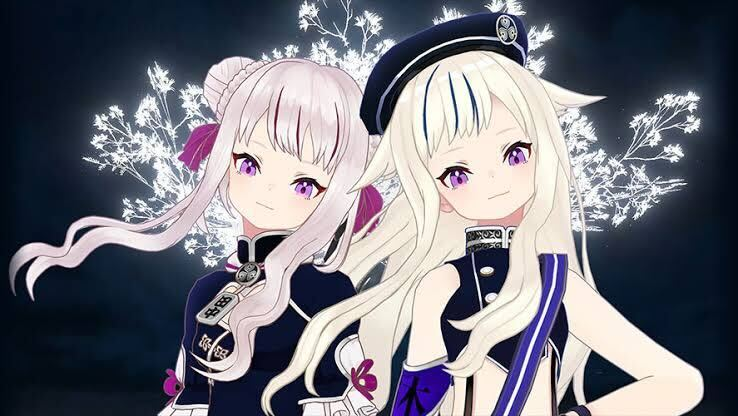

PROFILE
プロフィール

普段の活動
YouTube・niconico・bilibiliなどでバーチャルアーティストとして幅広く活動中。
オリジナルソングやミュージックビデオなどでこだわりの音楽活動をしておりライブなども行っている。
歌うことが大好き。
また、笑いのたえない企画やゲームの動画を投稿したり
月に1度の生放送「ヒメヒナ定刻集会」ではよく定刻に遅れつつも
ゲームをしたり、歌を歌ったり、にぎやかな放送をしている。
⇧クリックでYouTube